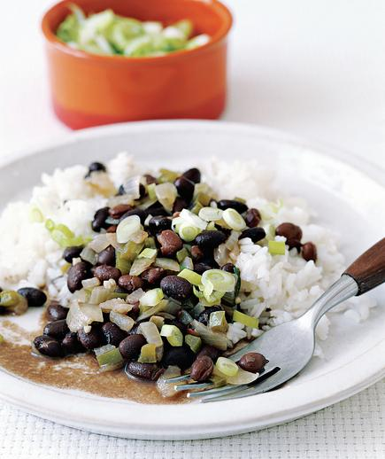

Black Beans and Rice

Ingredients
- kosher salt
- 1/2tablespoons olive oil
- 2cups long-grain rice
- 1 medium onion, chopped (1 cup)
- 1 large green or red pepper, chopped (1 1/2 cups)
- 2 medium cloves garlic, finely chopped (1 tablespoon)
- 15-ounce cans black beans, undrained
- 1cup vegetable or chicken broth
- 2tablespoons red wine vinegar
- 2 bay leaves
- 1/2teaspoon freshly ground black pepper
- 1/4teaspoon ground cumin
- 1/2cup sliced scallions (optional)
DIRECTIONS
In a medium saucepan, combine 4 cups of water with 1 teaspoon salt and 1½ teaspoons of the oil. Bring to a boil.
Stir in the rice, cover, and reduce heat to low. Cook for 20 minutes or until the rice is tender.
Meanwhile, in a saucepan, heat the remaining 2 tablespoons oil over medium heat. Sauté the onion, green pepper, and garlic until softened, about 5 minutes.
Add the beans, broth, vinegar, bay leaves, black pepper, cumin, and 1 teaspoon salt. Cover and bring to a boil.
Reduce heat to low and let simmer for 10 minutes. Remove the bay leaves.
Spoon the beans over the rice and sprinkle with the scallions (if desired). Serve warm.